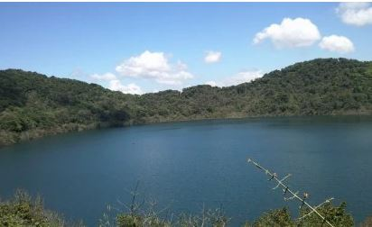
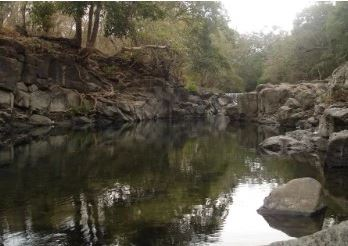
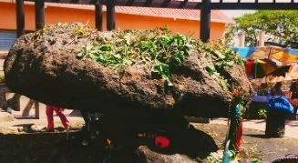
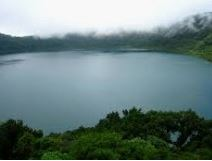
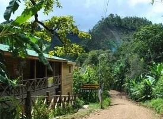

¡Los Mejores Lugares para Visitar!

El volcán Ipala de Chiquimula es característico, ya que posee un estanque en su cráter. La laguna, de casi 58 hectáreas de diámetro, se halla a alrededor de 1.500 m de altitud. El ambiente verde y fresco es un escenario ideal para hacer picnics, recorrer, tomar fotos y observar aves. El camino es fácil, agradable y seguro. El volcán se halla a 10 km de la villa de Quetzaltepeque. Si sube en la cumbre a unos 2000 m, podrá regocijarse de una bella vista y paisaje.
Tome un baño relajante en este espectacular pozo que se halla en la localidad de Jocotan, a orillas del río Río Grande. Hay numerosos lugares para cocinar debajo de grandes y sublimes árboles. Este lugar te invita a relajarte y meditar.
Atrayente historia con mucha imaginación. La invención sobre estas piedras dice que Dios penó a dos viajeros que iban a la Basílica, que disfrutaron una aventura sin embargo eran compadres. Se transformaron en piedras. Inclusive hoy, esta leyenda sobre el pecado a menudo se cuenta.
Hace muchos años, precisabas cruzar un lugar lleno de árboles, zanjas y agujeros profundos para llegar desde Quetzaltepeque a Esquipulas. Es un lugar excelente para caminar, tomar fotografías, regocijarse de la naturaleza, observar aves o sencillamente relajarse y meditar.
Se halla en la frontera con El Salvador y Honduras. A su alrededor se halla la «Biosfera de la Amistad», que ha sido declarada Reserva de la Biosfera. En la cima, logras hallar un bosque húmedo, fresco, nublado y exuberante con mucha vida salvaje. Este boscaje es el corazón de la reserva y un lugar excelente para quienes gustan de escalar, caminar, aprender la naturaleza y para la educación ambiental.
